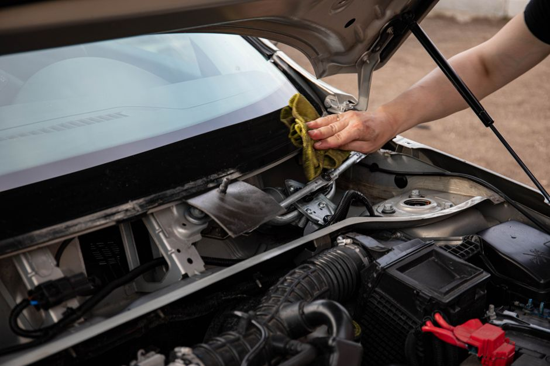
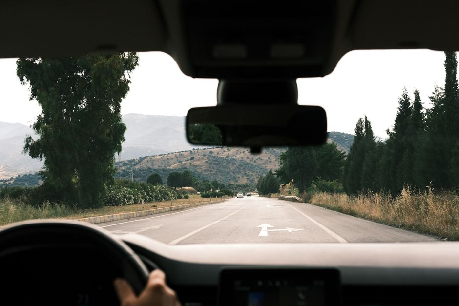

Enter a realm of clear vision with expert auto glass replacement.
Discover the premier destination for restoring your vehicle's safety. We connect you with top-tier windshield repair and car window replacement services tailored for the modern driver.

Comprehensive Auto Glass Solutions
Restoring structural integrity and visibility with precision and care.

Complete Windshield Replacement
When damage exceeds minor limits, a full windshield replacement is critical for your safety. Modern windshields are integral to a vehicle's structural strength. The services we highlight ensure that only premium quality glass and advanced adhesives are used to perform a factory-standard installation, getting you back on the road securely.
- OEM equivalent auto glass materials
- Structural integrity restoration

Precision Windshield Repair
Don't let a small annoyance turn into a costly replacement. Professional chip repair is designed to halt the spread of damage and restore the optical clarity of your auto glass. By injecting specialized resin into the damaged area, technicians can effectively cure the blemish, saving you time and preserving the original factory seal of your windshield.
- Fast and efficient chip repair
- Prevents cracks from spreading

Car Window Replacement
Whether it's due to an accident, break-in, or severe weather, shattered side or rear windows leave your vehicle vulnerable. We promote comprehensive car window replacement services that address all types of vehicle glass. Technicians carefully remove debris and install the new glass to ensure smooth operation and complete protection from the elements.
- Side and rear auto glass solutions
- Thorough interior debris cleanup
Our Mission for Clearer Roads
At Alstonia Realm, our focus is on connecting drivers with exceptional auto glass and windshield replacement company services. We understand that damaged auto glass is not just an aesthetic issue, but a serious safety hazard for you and your passengers.
This promotional platform highlights local professionals in Austin, TX who specialize in meticulous windshield repair, comprehensive car window replacement, and precise chip repair. Our goal is to provide a seamless bridge to experts who prioritize structural integrity and visual clarity, ensuring you can navigate the roads with confidence.

Driver Experiences
Real feedback from clients who found their auto glass solutions through our network.
"I had a massive crack across my vision line. The windshield replacement service I found here was incredibly professional and handled everything smoothly."
— Michael T., Austin
"A stone hit my glass on the highway. The chip repair was done perfectly and you can barely even tell where the damage was."
— Sarah L., Austin
"My passenger side window was shattered. The car window replacement was swift, and they cleaned up every piece of glass from the interior."
— David R., Austin
Frequently Asked Questions
How long does a typical windshield replacement take?
Most professional windshield replacement services take approximately one to two hours to complete. Additionally, you should allow for a safe drive-away time, usually an hour after installation, to let the urethane adhesive cure properly.
Can you perform chip repair on any size crack?
Generally, windshield repair is effective for chips smaller than a quarter and cracks shorter than a few inches. If the damage is larger, directly in the driver's line of sight, or at the edge of the glass, a full replacement is usually required for safety reasons.
Do the services handle car window replacement for all models?
Yes, the professionals in our network are equipped to source and install auto glass for nearly all vehicle makes and models, including side windows, rear windshields, and quarter glass.
Is it safe to drive immediately after auto glass service?
After a chip repair, you can usually drive right away. However, following a windshield replacement, you must adhere to the technician's advised "safe drive-away time" to ensure the structural seal has properly set before operating the vehicle.
What is the difference between windshield repair and replacement?
Repair involves injecting a specialized resin into minor chips to prevent further spreading and restore visual clarity, leaving the original glass in place. Replacement involves completely removing the damaged windshield and installing a brand-new pane of auto glass, necessary for extensive or critical damage.
Connect With Experts
Ready to restore your vehicle's safety? Submit your details to get connected with a professional auto glass and windshield replacement company in the Austin area. Let us help you find the right solution for your car window replacement or chip repair needs.
Service Area
Austin, TX
Standard Hours
Monday - Friday: 8:00 AM - 5:00 PM